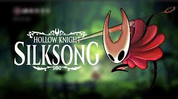
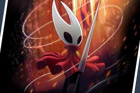

Hollow Knight: Silksong es la esperada secuela de Hollow Knight, un aclamado juego de acción y aventura de estilo "Metroidvania" desarrollado por Team Cherry. Silksong sigue la historia de Hornet, un personaje que fue introducido en el primer juego como un importante aliado y un formidable enemigo. En esta secuela, Hornet se convierte en la protagonista principal, y los jugadores la controlan mientras exploran un nuevo mundo lleno de desafíos y secretos.
¿De qué trata Hollow Knight: Silksong?
Silksong lleva a Hornet a un vasto y misterioso reino conocido como Phantom Silksong, un mundo muy diferente al de Hallownest, el escenario del primer juego. Esta nueva tierra está llena de criaturas extrañas, ciudades derrumbadas, y paisajes selváticos y subterráneos, todo diseñado con el estilo artístico único que hizo famoso a Hollow Knight.
En la historia, Hornet es capturada y llevada a este reino, y su misión será encontrar una forma de escapar, mientras desvela los secretos del lugar y enfrenta nuevos enemigos. A lo largo de su aventura, Hornet descubrirá una trama más profunda relacionada con su propio linaje y su conexión con el misterioso mundo en el que se encuentra.
 